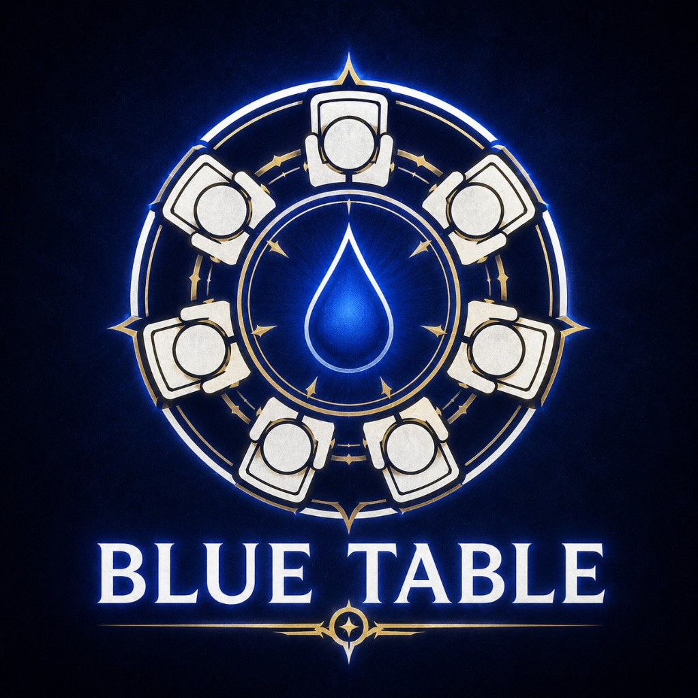
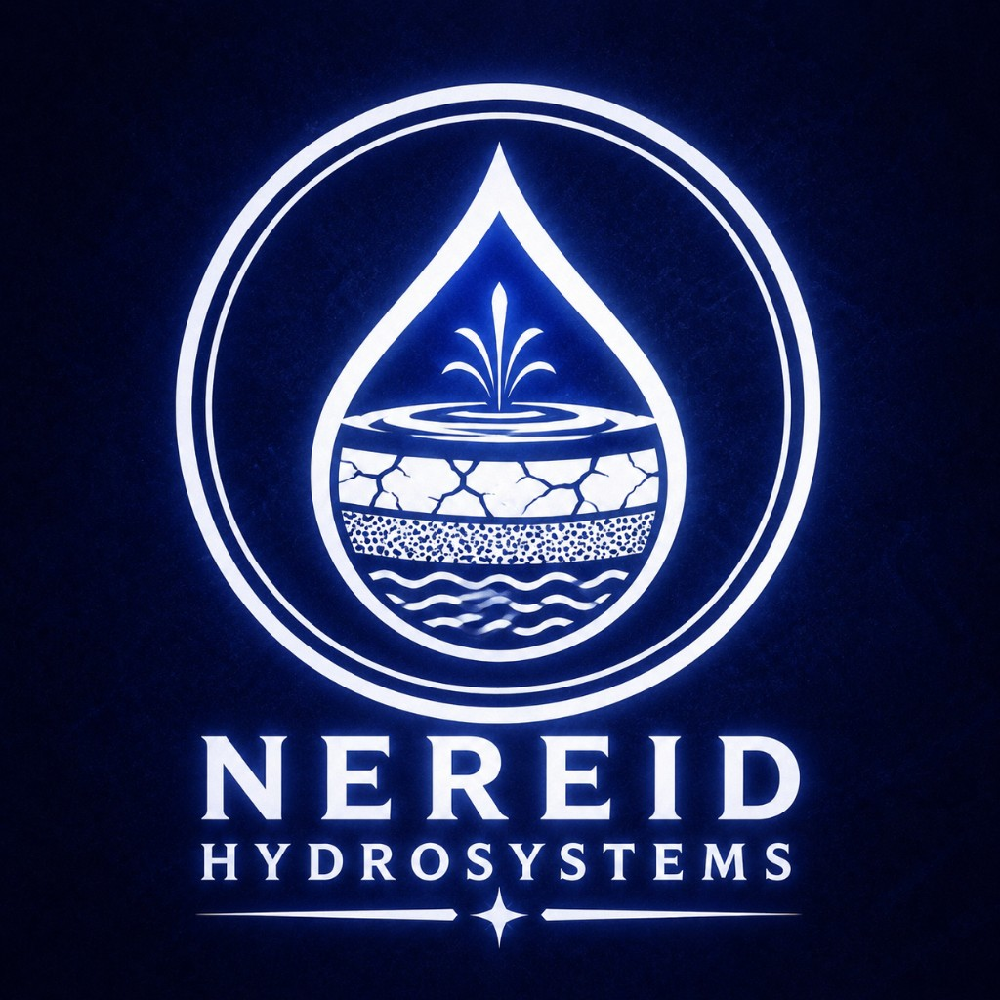
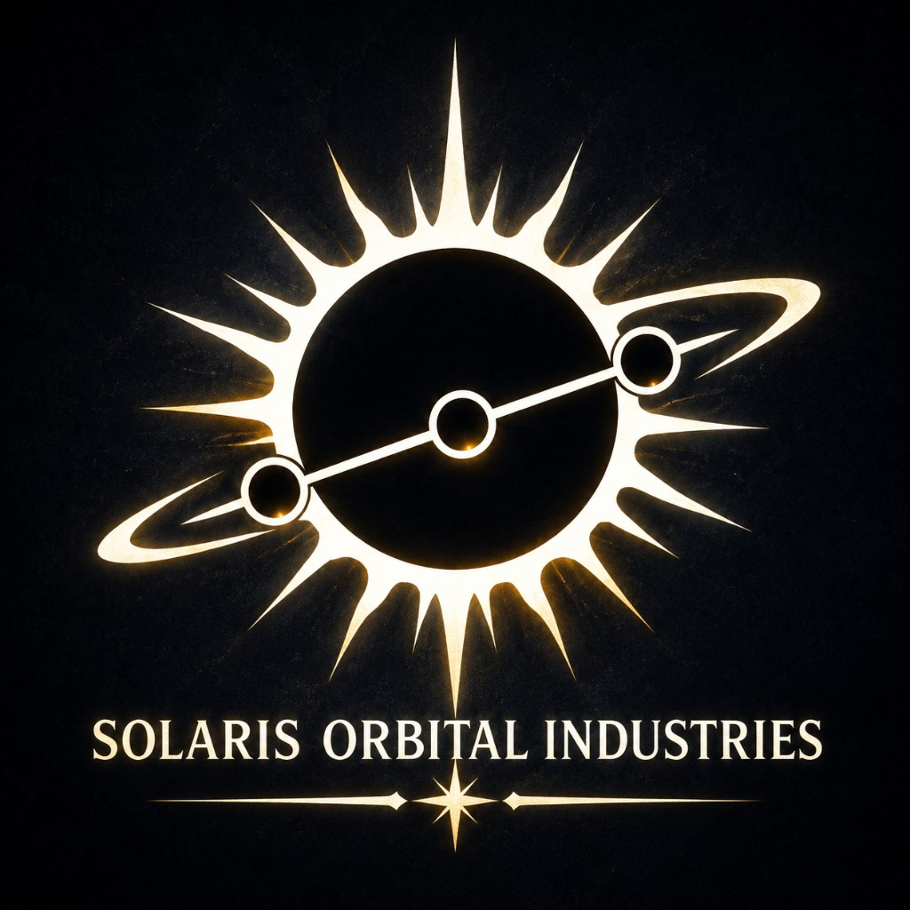
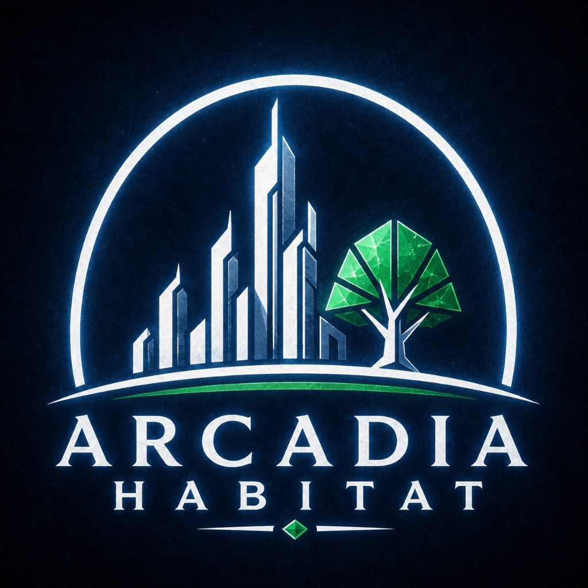
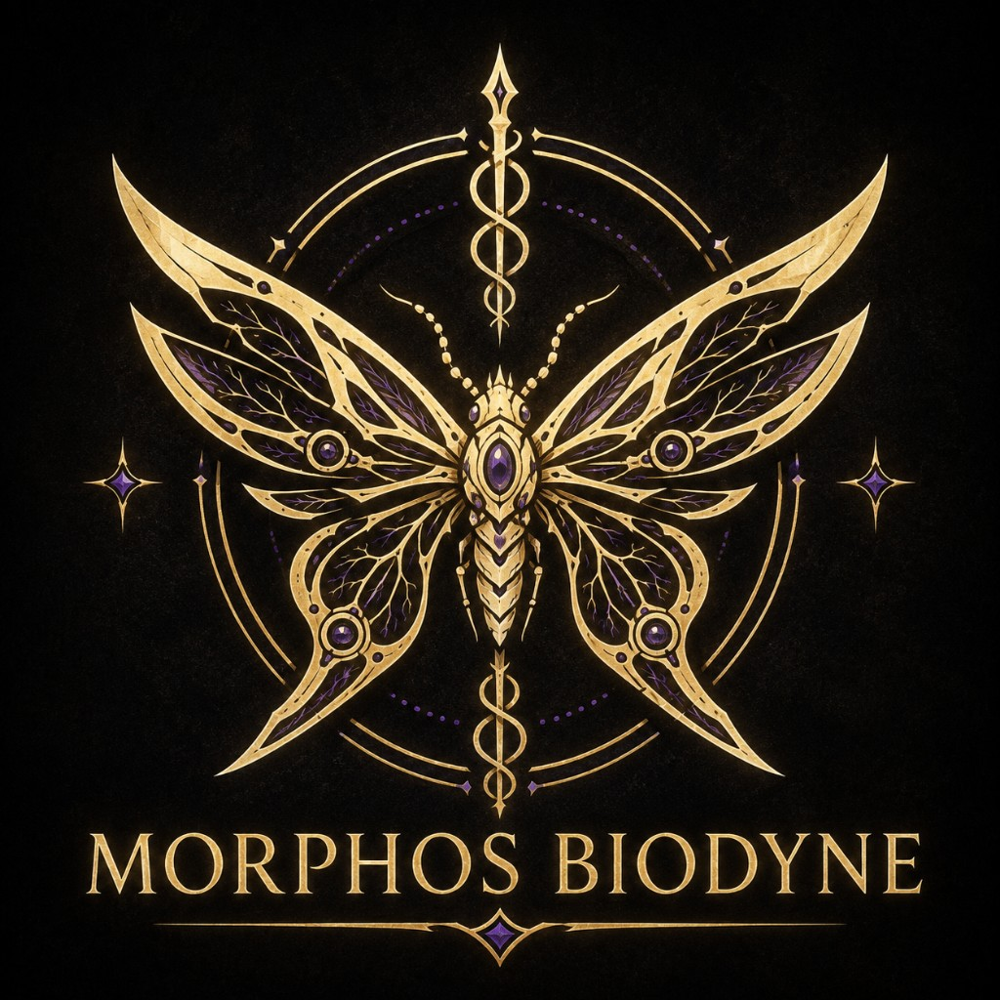
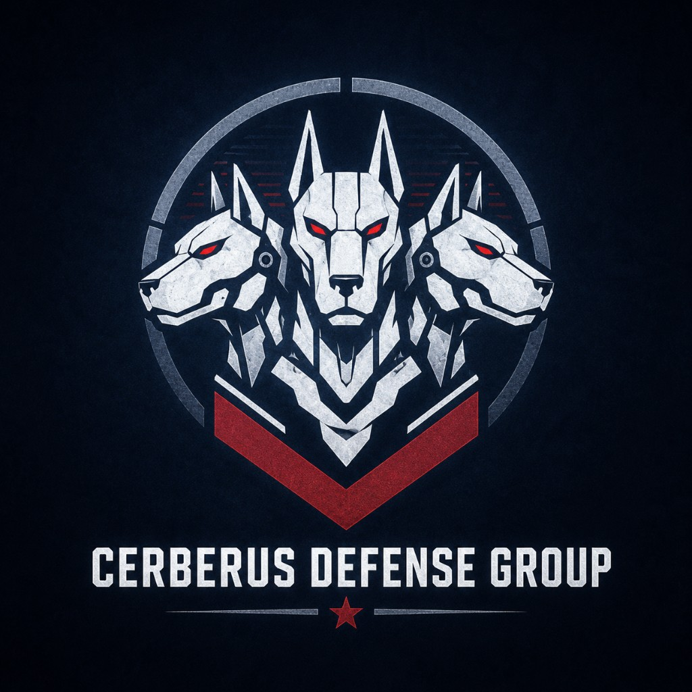
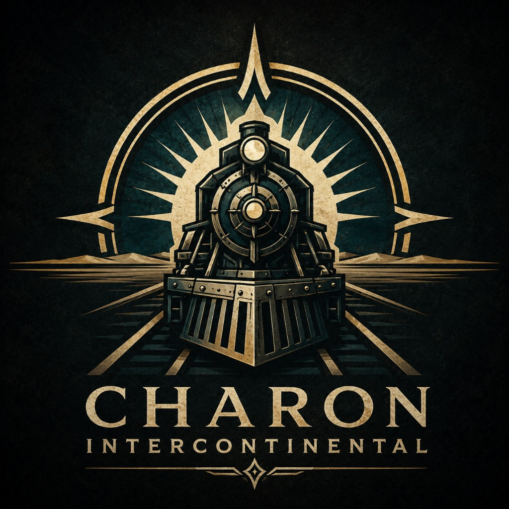
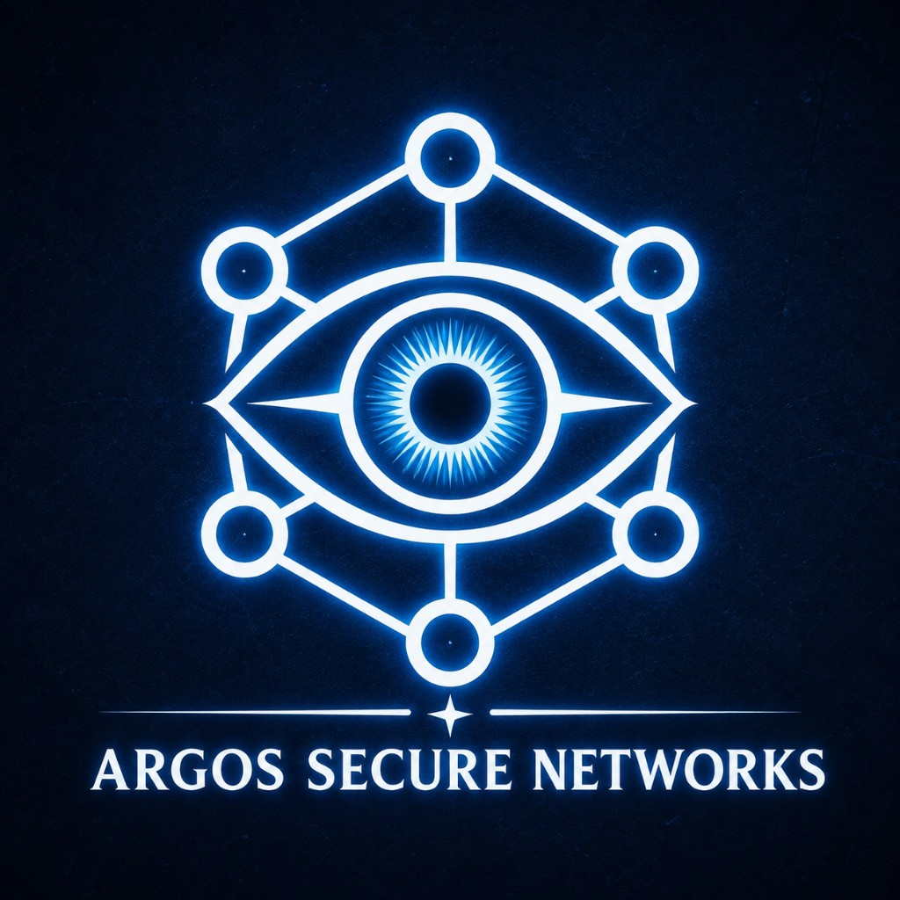

07 / FACTIONS
칠정 (七井) ? 일곱 우물
헬리오스 계획에 참여한 기업들의 후신이자 블루넷 공동 운영권을 가진 일곱 개의 메가코프. 블루 테이블에서 대표를 파견하는 수권관리이사회가 드롭 총발행량, 수맥 소유권, 도시 블루넷 접속, 재난지역 배급, 기업 간 분쟁, 신규 도시 승인을 관리한다.

-
NHS
네레이드 하이드로시스템즈 NEREID HYDROSYSTEMS
수자원 분야의 최강자. 수맥탐사, 지하수 채굴, 정수·저수, 수질 인증, 드롭 발행량 심사, 담수화 연구. 물을 인간의 기본권이 아니라 기업이 생산하는 상품으로 본다. 완성된 해수 담수화 기술을 숨기고 있다는 의혹.

-
SOI
솔라리스 궤도산업 SOLARIS ORBITAL INDUSTRIES
헬리오스 계획의 직계 후신. 태양광 발전, 궤도시설, 위성통신, 일소 조기경보, 기후관측. 헬리오스 중앙 관제권을 잃었다고 주장하지만, 일소를 비정상적으로 정확하게 예측한다.

-
AH
아르카디아 해비타트 ARCADIA HABITAT
돔과 도시생활을 판매하는 기업. 돔 건설, 인공대기·냉방, 수경재배, 주택·병원·학교, 기업시민권, 도시행정. 아르카디아의 도시는 국가가 아니라 생존 서비스에 가깝다.

-
MB
모르포스 바이오다인 MORPHOS BIODYNE
소수 정예와 인간 개조를 중시하는 군산복합체. 고급 사이버웨어, 생체조직형 의체, 스마트건, 단분자 도검, 유전자 강화. 정예 특수부대 메타모프. "인간에게 무기를 쥐여주지 않는다. 인간을 무기로 만든다."

-
CDG
케르베로스 디펜스 그룹 CERBERUS DEFENSE GROUP
대량생산과 압도적 화력을 중시하는 군산복합체. 총기·중화기, 군용 사이버웨어, 장갑차, 전투드론, 포병체계. 기업군 핵심 전력 트라이던트. "화력은 거짓말하지 않는다."

-
CI
카론 인터콘티넨털 CHARON INTERCONTINENTAL
도시와 대륙을 연결하는 물류기업. 장갑열차, 육상선·카라반, 수송로·중계기지, 차량 생산. 카론의 노선에서 제외된 도시는 서서히 쇠퇴한다.

-
ASN
아르고스 시큐어 네트워크 ARGOS SECURE NETWORKS
블루넷과 데이터의 실질적 관리자. 금융결제, 신원인증, 통신, AI, 보안·감시, 언론·가상현실. 한 사람의 계좌·신분·시민권을 모두 삭제해 사회적으로 존재하지 않는 사람으로 만들 수 있다.

모르포스 vs 케르베로스
| 구분 | 모르포스 | 케르베로스 |
|---|---|---|
| 철학 | 인간을 무기로 완성 | 병력을 규격화해 전쟁 수행 |
| 제품 | 고급·주문제작 | 보급형·대량생산 |
| 주 고객 | 기업요원·상류층·정예용병 | 도시군·일반용병·자경단 |
| 특기 | 잠입·암살·정보전 | 점령·기갑·화력전 |
| 디자인 | 유려하고 생체적 | 각지고 기계적 |
| 대표부대 | 메타모프 | 트라이던트 |